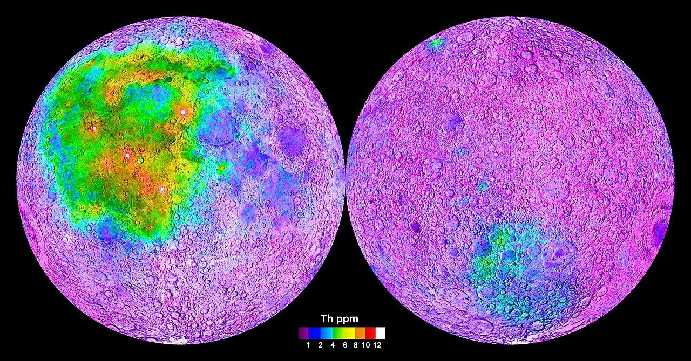
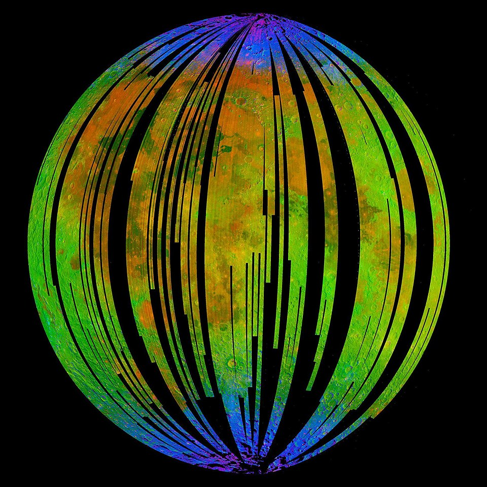
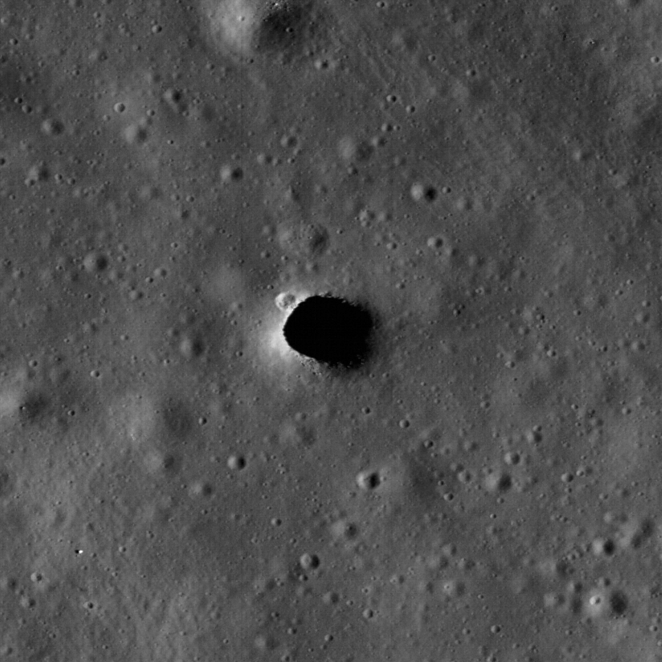
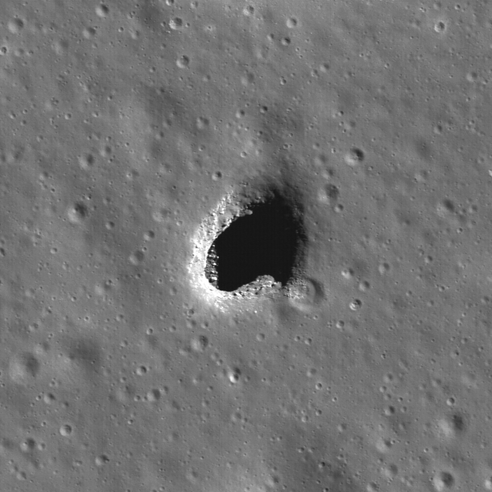

Not Plato’s cave
Tav gives satellite imagery, terrain data, caves, minerals and on-site photos of the Moon to your LLM.
Cousin of Aleph.
“Unable to resist my eager desire … and having wandered some distance among gloomy rocks, I came to the entrance of a great cavern, in front of which I stood some time, astonished … and after having remained there some time, two contrary emotions arose in me, fear and desire—fear of the threatening dark cavern, desire to see whether there were any marvellous thing within it.”

Tool
Studies
Every method used so far, and the result each one gave.

02 Mapping the Moon’s minerals and caves (software)The programs behind the maps, with animations of how they work.

03 Aleph for the Moon Tav תA tool that downloads everything known about a place on the Moon, for an agent to look at.

04 Detecting caves through agentsFeed an agent data through Tav and propose new cave candidates.